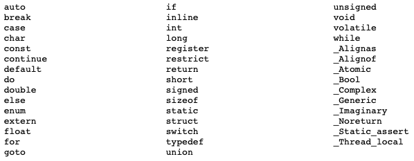

Introdução à Programação com a Linguagem C #
Programação é o método que utilizamos para criar sistemas computacionais, como jogos, websites, aplicativos de celular, e todos os sistemas de computador que encontramos em bancos, farmácias e supermercados.
Programar é a tarefa de se comunicar com o computador através da escrita de uma sequencia de tarefas (instruções) que desejamos que seja executada. Toda comunicação requer uma linguagem comum entre as entidades que se comunicam, neste caso entre o humano (o programador) e o computador. Dessa forma, aprenderemos uma linguagem de programação para nos comunicarmos com a computador.
A linguagem C #
C é uma linguagem de propósito geral. Isso quer dizer que ela pode ser utilizada para escrever programas para várias àreas diferentes. Sua linguagem segue um padrão procedural, permitindo a decomposição de problemas grande e complexos em procedimentos (módulos) separados e mais simples.

Como toda linguagem de programação, C possui um conjuto de palavras reservadas que são utilizadas para a criação das instruções que comporão um programa. A palavras reservadas em C são:

Configurando o ambiente de programação #
(Atividade desenvolvida no laboratório) - (será detalhado na página em breve)
Primeiro programa em C #
Agora vamos executar o primeiro código em C. Ao ser executado, o programa irá imprimir na tela a mensagem “Olá, mundo lindo!”. Digite o seguinte texto (código-fonte) em um arquivo chamado primeiro_programa.c:
#include <stdio.h>
int main() {
printf("Olá, mundo lindo!");
return 0;
}
Vamos entender:
-
Você criará muitos arquivos com códigos em C daqui pra frente, e existem regras para a nomeação desses arquivos. As regras são:
- O arquivo deve ter a extensão .c.
- Não podem haver espaços no nome do arquivo. Por exemplo: “primeiro programa.c”.
-
A maioria dos arquivos começará com instruções #include < … >, chamadas de cabeçalho do programa. #include é uma instrução utilizada para adicionarmos procedimentos (funções) que já foram programados previamente. No exemplo, estamos adicionando ao nosso programa um arquivo presente no compilador C que foi instalado na sua máquina. O arquivo stdio.h contém código C (entederemos mais à frente a extensão .h) com procedimentos que permitem a entrada e saída de textos na tela.
-
int main (){ … } é uma sintaxe mandatória que identifica o ponto inicial de execução do seu código. Quando executado, o seu programa começará a executar as instruções criadas dentro desse bloco delimitado pelas chaves { }. Entenderemos melhor essa estrutura quando estudarmos a declaração de funções em C. No exemplo, temos duas instruções dentro do bloco main:
- printf é uma função definida no arquivo stdio.h para impressão de textos na tela. O texto que será impresso deve ser colocado entre aspas.
- return é uma palavra reservada utilizada para finalizar a execução de um bloco de código.
Mais um exemplo de código:
#include <stdio.h>
int main()
{
printf("Programação requer prática. \n Pratique!");
printf("\n Pratique!");
return 0;
}
Neste exemplo acrescentamos ao texto dentro do printf uma sequência de escape. Perceba que tem um \n no meio do texto do primeiro printf, e no inicio do texto do segundo printf. Sequencias de escape são utilizados em textos para a inserção de caracteres especiais. O \n representa quebra de linha, como um enter do teclado. Dessa forma, a saída do programa será:
Programação requer prática.
Pratique!
Pratique!
Básico da Linguagem C #
Estudaremos primeiro o que considero funcionalidades básicas da linguagem.
Comentários #
Além de instruções, o seu programa pode conter comentários para auxiliar o entendimento do código. É uma boa prática de programação documentar o seu código com comentários informativos e instrutivos para auxiliar a manutenção do código. Existem dois tipos de comentários em C: de linha e de bloco. Ambos são ignorados pelo compilador na criação do arquivo executável do programa.
O comentário de linha se inicia com duas barras (//) e seu escopo finaliza ao final de uma linha:
//Este é um comentário de linha.
//Este é outro comentário de linha.
O comentário de bloco é delimitado pelos símbolos /* para abertura e */ para fechamento do bloco. Todas as linhas dentro do bloco fazem parte do mesmo comentário.
/* Este é um
comentário
de bloco */
/* Este também é um comentário de bloco */
Ponto e vírgula #
C utiliza ponto e vírgula como delimitador de instruções. É a forma que o compilador utiliza para saber como ler e separar as instruções no código. Note que, no nosso exemplo, temos duas instruções que são finalizadas com ponto e vírgula:
printf("Olá, mundo lindo!");
return 0;
Algumas instruções já possuem o próprio delimitador, e não precisam de ponto e vírgula. Será fácil identificá-las quando você avançar no curso.
Variáveis #
Os dados que criamos e manipulamos em nosso programa precisam ser armazenados na memória do computador para que possam ser referenciados e utilizados no código. Linguagens de programação utilizam variáveis para este propósito. Em C, uma variável deve ser declarada no código com o seu tipo e um nome.
//Sintaxe de instrução para criação de variável
tipo nome;
Os tipos são convenções definidas na linguagem, para que o compilador saiba a quantidade de memória máxima que será reservada para armazenar dados na variável. Os tipos básicos em C são:
| Tipo | Tamanho | Descrição |
|---|---|---|
| char | 8 bits | Armazena códigos correspondentes a um caracter da tabela ASCII. |
| int | 16 bits ou 32 bits | Armazena números inteiros (positivos e negativos). |
| float | 32 bits | Armazena números fracionários, com precisão de até sete dígitos. |
| double | 64 bits | Armazena números fracionários, com precisão de até 15 dígitos. |
Estudaremos mais sobre os tipos de variáveis e como podem ser modificados ao longo do curso.
Exemplo de declaração de variáveis de cada tipo:
int x;
float y;
char z;
double k;
Variáveis do mesmo tipo podem ser declaradas na mesma linha, separadas por vírgula. Exemplo:
int x, w, q; //declaração de três variáveis do tipo int
O nome da variável pode ser utilizado em diferentes partes do código para acessarmos o conteúdo presente na posição de memória correspondente.
Existem regras para a nomeação das variáveis. São estas:
- Podem utilizar letras maiúsculas, letras minúsculas, números e o caracter sublinhado;
- Não podem ser iniciados com números;
- Não podem ser idênticos às palavras reservadas da linguagem.
Exemplos de nomes válidos e inválidos:
//Exemplos de nomes válidos
int nomeValido01;
float nome_valido_02;
char _nomeValido_03;
//Exemplos de nomes inválidos
int int;
int 2nome_invalido;
Operador de atribuição #
Como na matemática, atribuimos valor às variáveis com o símbolo de atribuição =. Podemos atribuir valor à uma variável em sua declaração, ou em outras partes do código após a sua declaração. Exemplos:
//Atribuição de valores em conjunto com a declaração da variável
int x = 10; //leia-se: x recebe o valor 10
float y = 10.123;
char z = 'a';
//Atribuição de valores após a criação das variáveis
x = 12;
z = 15.0;
z = 'b';
Podemos atribuir valor à mesma variável quantas vezes quisermos no mesmo programa, o valor da variável sempre é apagado da memória e substituido pelo valor mais recente que for atribuido.
Uma variável também pode receber o valor de outra variável na atribuição, por exemplo:
int x, y;
x = 10;
y = x; // Atribuímos o valor 10 da variável x à variável y. Equivale à y = 10;
Podemos também concatenar as atribuições de valores, por exemplo:
//Atribuição na declaração concatenada de variáveis do mesmo tipo
int x = 1, y = 2, z = 3;
//Atribuição do mesmo valor à mais de uma variável.
x = y = z = 4;
Ao tipo char podem ser atribuídos o caracter envolto em aspas simples, como nos exemplos acima, ou o número inteiro correspondente da tabela ASCII. Exemplo:
z = 'c';
z = 99; //Na tabela ASCII, 99 é o valor decimal do caracter c.
Lendo e imprimindo valores de variáveis #
Nós já aprendemos a imprimir textos na tela com o comando printf(). Também utilizamos o printf() para imprimir valores de variáveis. Para isso, o comando requer a sinalização do tipo de variável que será impressa. A linguagem C utiliza uma sequência de caracteres para fazer essa sinalização, e cada tipo de variável tem um sinalizador diferente. Exemplos de sequências são:
| Caracteres | Tipo de variável |
|---|---|
| %d | int |
| %f | float |
| %c | char |
Exemplos de comandos com impressão de variáveis:
int var_int = 10;
float var_float = 10.5;
char var_char = 'A';
printf("%d", var_int);
printf("%f", var_float);
printf("%c", var_char);
Podemos concatenar valores de variáveis com textos que serão impressos na tela. Por exemplo:
int var_int = 10;
float var_float = 10.5;
char var_char = 'A';
printf("O valor da variável tipo int é: %d.", var_int);
printf("O valor %f pertence à variável do tipo float.", var_float);
printf("%c é o conteúdo da variável var_char.", var_char);
printf("Os valores das variáveis são: %d, %f, %c", var_int, var_float, var_char);
Para permitir que o usuário insira valores no programa, podemos ler informações digitadas no teclado com o comando scanf(). Seguem exemplos de utilização:
int var_int;
float var_float;
char var_char;
printf("Digite um valor inteiro:");
scanf("%d", &var_int); // Observe que adicionamos & ao nome da variável!
printf("Digite um valor fracionado:");
scanf("%f", &var_float); // Observe que adicionamos & ao nome da variável!
printf("Digite um caractere:");
scanf("%c", &var_char); // Observe que adicionamos & ao nome da variável!
printf("Os valores digitados são: %d, %f, %c", var_int, var_float, var_char);
Falaremos mais sobre o comando scanf() ao longo do curso.
Operadores aritméticos binários #
Variáveis numéricas podem compor expressões aritméticas no código. Os operadores aplicados em C são:
| Operador | Descrição | Exemplo |
|---|---|---|
| + | soma | z = x + y; |
| - | subtração | z = x - y; |
| * | multiplicação | z = x + y; |
| / | divisão | z = x / y; |
| % | resto da divisão | z = x % y; |
Da mesma forma que na matemática, a multiplicação e a divisão têm precedência à soma e à subtração. Para entender a execução de expressões com operadores de mesma precedência, saiba que a linguagem executará as operações da esquerda para a direita. Os parênteses também podem ser utilizados para organização de precedência na execução.
Os operadores exemplificados acima são binários. Isto quer dizer que requerem dois elementos para realizar a operação. Nos exemplos da tabela temos x e y. Outros exemplos válidos são:
y = 1 + 2;
x = x + x;
x = x - 1;
z = 10 * y;
Operadores aritméticos unários #
Os operadores de adição e subtração também podem ser utilizados com uma única variável para incremento ou decremento do valor da variável. Neste caso, dizemos que o operador é unário. A sintaxe é diferente, pois duplicamos o operador. Veja os exemplos:
x++; // equivale a x = x + 1;
y--; // equivale a y = y - 1;
Nos exemplos acima, o novo valor da variável será acessível a partir da próxima linha de código. Existe ainda a possibilidade de anteciparmos o acesso ao novo valor para a mesma linha da instrução que altera a variável. Para isso, mudamos a ordem dos operadores para:
++x; // também incrementa 1 ao valor de x;
--y; // também decrementa 1 ao valor de y;
O operador de subtração também pode ser utilizado de forma unária para a declaração de números negativos. Exemplo:
x = -1;
y = - 10;
Operadores relacionais #
Operadores relacionais são utilizados para formar expressões que comparam dois ou mais elementos, para obter o resultado verdadeiro ou falso. Os operadores relacionais em C são:
| Operador | Descrição | Exemplo |
|---|---|---|
| > | maior que | x > y |
| < | menor que | x < y |
| >= | maior ou igual | x >= y |
| <= | menor ou igual | x <= y |
| == | igual a | x == y |
| != | diferente de | x != y |
Em C, as expressões relacionais retornam o valor 0 para informar que a expressão é falsa, e o valor 1 se o resultado da expressão for verdadeiro. Por exemplo:
int x = 1, y = 2, z;
z = x < y; // z recebe o valor 1, pois a expressão (1 é menor que 2) é verdadeira
z = x == y; // z recebe o valor 0, pois a expressão (1 é igual a 2) é falsa
Operadores lógicos #
A lógica boleana é frequentemente utilizada quando programamos. Com a lógica boleana, podemos compor expressões utilizando os operadores binários E e OU, e o operador unário de negação NÃO. Os resultados das expressões serão sempre verdadeiros ou falsos. A semântica dos operadores está resumida nas tabelas abaixo:
Tabela do operador E (Lemos assim: verdadeiro e verdadeiro, é igual a verdadeiro):
| Operando | Operador | Operando | Resultado |
|---|---|---|---|
| verdadeiro | E | verdadeiro | verdadeiro |
| verdadeiro | E | falso | falso |
| falso | E | verdadeiro | falso |
| falso | E | falso | falso |
Tabela do operador OU:
| Operando | Operador | Operando | Resultado |
|---|---|---|---|
| verdadeiro | OU | verdadeiro | verdadeiro |
| verdadeiro | OU | falso | verdadeiro |
| falso | OU | verdadeiro | verdadeiro |
| falso | OU | falso | falso |
A tabela do operador de negação é mais simples. Vamos inverter a ordem do operador, para ler assim: “Não verdadeiro, é igual a falso.”:
| Operador | Operando | Resultado |
|---|---|---|
| NÃO | verdadeiro | falso |
| NÃO | falso | verdadeiro |
Em C, a sintaxe dos operadores boleanos E e OU é, respectivamente, && e ||. A sintaxe do operador NÃO é o símbolo de exclamação !. Lembremos que, como resultado de expressões, o 0 representa falso e 1 representa verdadeiro. Dessa forma, utilizando a sintaxe em C, as tabelas são:
Operador && (E):
| Operando | Operador | Operando | Resultado |
|---|---|---|---|
| 1 | && | 1 | 1 |
| 1 | && | 0 | 0 |
| 0 | && | 0 | 0 |
| 0 | && | 0 | 0 |
Operador || (OU):
| Operando | Operador | Operando | Resultado |
|---|---|---|---|
| 1 | || | 1 | 1 |
| 1 | || | 0 | 1 |
| 0 | || | 0 | 1 |
| 0 | || | 0 | 0 |
Operador de negação ! :
| Operador | Operando | Resultado |
|---|---|---|
| ! | 1 | 0 |
| ! | 0 | 1 |
Os operadores lógicos são comumente utilizados em conjunto com outros operadores, por exemplo:
int x = 1, y = 2, z = 3, w;
w = (x < y) && (x < z); // w recebe o valor 1, como resultado de (1) && (1)
w = (x == y) && (x < z); // w recebe o valor 0, como resultado de (0) && (1)
w = (x >= y) || (x < z); // w recebe o valor 1, como resultado de (0) || (1)
w = (x == y) || (x == z); // w recebe o valor 0, como resultado de (0) || (0)
w = !(x == y); // w recebe o valor 1, como resultado de !(0)
Comandos condicionais #
Podemos adicionar avaliação de condições no código para decidir se um conjunto de instruções deverá ser executado. Condições são expressões cujo resultado será verdadeiro ou falso. Uma vez verdadeiro, o código associado à estrutura condicional será executado. A linguagem C possui três formas de estruturas condicionais:
- if-else
- switch-case
- E a estrutura condição ? verdadeiro : falso.
IF-ELSE #
Vamos começar entendo a estrutura de código condicional utilizando apenas o comando IF. A sintaxe do comando é: (Leia-se: SE condição for verdadeira, ENTÃO a instrução seguinte será executada. )
if (condição)
instrução;
Por exemplo, considere uma variável x, cujo valor será inserido pelo usuário: (Leia-se: SE x for maior que zero, ENTÃO imprima na tela o texto “O valor de x é positivo”. )
if (x > 0)
printf("O valor de x é positivo.");
A sintaxe acima funciona apenas para avaliação condicional de uma única linha de instrução. Para incluir mais linhas de instrução, devemos adicionar um par de chaves {} para iniciar e fechar um bloco de instruções. Dessa forma, todas as instruções dentro do bloco serão executadas apenas se a condição for verdadeira.
if (condição){ // inicio do bloco de instruções;
instrução_01;
instrução_02;
...
instrução_N;
} // final do bloco de instruções;
Exemplo:
if (x > 0){
printf("O valor de x é positivo.");
x = x + 1;
z = x;
}
Podemos também escrever instruções que deverão ser executadas caso a condição seja falsa. Para isso, complementamos a estrutura do IF com o ELSE. A sintaxe é: (Leia-se: SE condição for verdadeira, ENTÃO instrução_se_condição_verdadeira será executada, SE NÃO, instrução_se_condição_falsa será executada. )
if (condição)
instrução_se_condição_verdadeira;
else
instrução_se_condição_falsa;
Por exemplo: (Leia-se: SE x for maior que zero, ENTÃO imprima na tela o texto “O valor de x é positivo”, SE NÃO, imprima na tela o texto “O valor de x é negativo ou igual a zero”. )
if (x > 0)
printf("O valor de x é positivo.");
else
printf("O valor de x é negativo ou igual a zero.");
Da mesma forma, podemos criar blocos de instruções a partir do else. Por exemplo:
if (x > 0){
printf("O valor de x é positivo.");
x = x + 1;
z = x;
} else {
printf("O valor de x é negativo ou igual a zero.");
w = x;
}
É possível fazer o aninhamento da estrutura IF-ELSE.
if (condição_01){
instrução_01;
} else if (condição_02){
instrução_02;
} else {
instrução_03;
}
Exemplo:
if (x > 0) {
printf("O valor de x é positivo.");
} else if (x < 0) {
printf("O valor de x é negativo.");
} else{
printf("O valor de x é zero.");
}
Podemos fazer quantos aninhamentos quisermos, por exemplo:
int lados = 0;
printf("Digite o número de lados do seu polígono:");
scanf("%d", &lados); // O usuário informará algum valor, não sabemos qual será.
if (lados == 3) {
printf("O polígono é um triângulo.");
} else if (lados == 4) {
printf("O polígono é um quadrilátero.");
} else if (lados == 5) {
printf("O polígono é um pentágono.");
} else if (lados == 6) {
printf("O polígono é um hexágono.");
} else if (lados == 7) {
printf("O polígono é um heptágono.");
} else{
printf("Valor não identificado.");
}
Como temos uma única linha de instrução para cada condição, poderíamos reescrever o código acima dessa forma:
if (lados == 3)
printf("O polígono é um triângulo.");
else if (lados == 4)
printf("O polígono é um quadrilátero.");
else if (lados == 5)
printf("O polígono é um pentágono.");
else if (lados == 6)
printf("O polígono é um hexágono.");
else if (lados == 7)
printf("O polígono é um heptágono.");
else
printf("Valor não identificado.");
SWITCH-CASE #
Blocos de códigos condicionais também podem ser criados com a estrutura SWITCH-CASE. A sintaxe é:
switch(variável){
case valor_1:
instruções; //podem ser várias linhas de instruções
break;
case valor_2:
instruções;
break;
...
case valor_m:
instruções;
break;
default:
instruções;
}
Vamos entender:
- A variável dentro do switch() poderá ser do tipo int ou char;
- O switch é composto por blocos case. Cada bloco case é um teste para saber se o valor da variável é igual ao valor declarado após o nome case (valor_1, no exemplo do primeiro bloco case). Caso seja igual, as instruções pertencentes ao bloco serão executadas. Caso seja diferente, o próximo bloco case será testado. Podemos ler a estrutura acima dessa forma:
- “Caso o valor de variável seja igual a valor_1, execute as instruções do primeiro bloco case, pule todas as outras, e finalize a execução do switch. Caso seja diferente:
- Execute o mesmo teste para os blocos case sequintes com seus respectivos valores.
- “Caso o valor de variável seja igual a valor_1, execute as instruções do primeiro bloco case, pule todas as outras, e finalize a execução do switch. Caso seja diferente:
- O último bloco é o default. Se o valor de variável for diferente de todos os valores declarados nos blocos case, as instruções do bloco default serão executadas. Esse bloco é opcional.
- Perceba que o último comando de cada bloco case é o break. Este comando é o responsável pelo comportamento de “pular todos os outros” blocos case após encontrar o valor correspondente em um bloco corrente.
Vejamos um código exemplo de SWITCH-CASE:
int lados = 0;
printf("Digite o número de lados do seu polígono:");
scanf("%d", &lados); // O usuário informará algum valor, não sabemos qual será.
switch(lados){
case 3:
printf("O polígono é um triângulo.");
break;
case 4:
printf("O polígono é um quadrilátero.");
break;
case 5:
printf("O polígono é um pentágono.");
break;
case 6:
printf("O polígono é um hexágono.");
break;
case 7:
printf("O polígono é um heptágono.");
break;
default:
printf("Valor não identificado.");
}
Caso o usuário digite 3, o programa imprimirá na tela apenas O polígono é um triângulo.. Se o usuário digitar um valor que não está declarado em nenhum bloco case, por exemplo, 10, o programa imprimirá: Valor não identificado.
O comando break é opcional, porém, o SWITCH-CASE funciona de forma diferente se não o utilizarmos. Após encontrar o valor correspondente em um bloco case, todos os outros blocos sequintes serão executados também. Por exemplo, considere o mesmo código sem os comandos break:
int lados = 0;
printf("Digite o número de lados do seu polígono:");
scanf("%d", &lados); // O usuário informará algum valor, não sabemos qual será.
switch(lados){
case 3:
printf("O polígono é um triângulo.");
case 4:
printf("O polígono é um quadrilátero.");
case 5:
printf("O polígono é um pentágono.");
case 6:
printf("O polígono é um hexágono.");
case 7:
printf("O polígono é um heptágono.");
default:
printf("Valor não identificado.");
}
Neste caso, se o usuário digitar 3, o programa imprimirá na tela: O polígono é um triângulo. O polígono é um quadrilátero. O polígono é um pentágono. O polígono é um hexágono. O polígono é um heptágono. Valor não identificado..
Da mesma forma, se o usuário digitar 5, o programa imprimirá: O polígono é um pentágono. O polígono é um hexágono. O polígono é um heptágono. Valor não identificado.
Condição ? verdadeiro : falso #
(em breve)
Comandos de repetição #
As estruturas condicionais estudadas acima executam um bloco de intruções quando uma determinada condição é satisfeita. O bloco é executado apenas uma vez, e o programa prossegue executando as próximas instruções de código, caso existam. As vezes, alguns algorítmos requerem a repetição da execução do mesmo bloco de instruções enquanto uma condição continua sendo satisfeita. Para isso, utilizamos comandos de repetição. A linguagem C possui três formas de estruturas de repetição:
- for
- while
- do while
FOR #
O comando for permite a repetição de um bloco de instruções enquanto uma condição for satisfeita. A sintaxe do comando for é:
for (variável_de_inicialização; condição; incremento){
instruções;
}
Vamos entender:
- variável_de_inicialização normalmente contém a declaração e/ou a atribuição de um valor à uma variável que será utilizada como um contador de repetições.
- condição normalmente contém uma expressão boleana envolvendo a variável_de_inicialização.
- incremento normalmente contém a adição ou subtração da variável_de_inicialização.
O comando for funciona da seguinte forma:
- Primeiro a instrução em variável_de_inicalização é executada;
- Em seguida, a condição é testada. Se o resultado for verdadeiro, o bloco de instruções é executado.
- Ao final da execução do bloco, o comando em incremento é executado.
- Então, a condição é testada novamente, e o bloco de instruções será executado novamente caso o resultado seja verdadeiro.
- Executa-se o comando em incremento novamente, e a repetição entre testar condição -> executar bloco de instruções -> executar incremento continua até que a condição não seja satisfeita, ou seja, retorne falso.
Um exemplo de código:
for (int i = 1; i < 5; i++){
printf("Repetição %d. ", i);
}
A saída do código será:
Repetição 1. Repetição 2. Repetição 3. Repetição 4.
Outro exemplo:
for (int i = 4; i > 0; i--){
printf("Repetição %d. ", i);
}
A saída do código será:
Repetição 4. Repetição 3. Repetição 2. Repetição 1.
Existem variações na estrutura do comando for, mas não trabalharemos com as variações neste momento.
WHILE #
Outra estrutura de repetição é a do comando WHILE. A sintaxe é: (Leia-se: Enquanto condição for verdadeira, execute o bloco de instruções.)
while (condição) {
instruções;
}
Com uma sintaxe mais simples, o while define a condição para que uma sequência de instruções seja executada. O comando testa a condição repetidamente após finalizar a execução de todas as instruções definidas em seu bloco (entre { }). No momento em que a condição não for mais satisfeita, o bloco de instrucões não será mais executado, e a próxima instrução no código será executada, caso exista.
Podemos conseguir o mesmo efeito do código com a estrutura for anterior, por exemplo:
int i = 1;
while(i < 5) {
printf("Repetição %d. ", i);
i++;
}
A saída do código será:
Repetição 1. Repetição 2. Repetição 3. Repetição 4.
DO WHILE #
Uma estrutura semelhante à do WHILE é a DO WHILE. A sintaxe é: (Leia-se: Faça a execução do bloco de instruções, enquanto condição for verdadeira.)
do {
instruções
} while(condição)
A diferença desse comando para o while anterior é que o bloco de instruções é executado a primeira vez sem que a condição seja testada. Ao final da primeira execução a condição é avaliada, e se verdadeira, o compilador retorna para o início do bloco novamente, e o mesmo ciclo de repetições acontece até que a condição não seja mais satisfeita.
Exemplo de código:
int i = 1;
do {
printf("Repetição %d. ", i);
i++;
} while(i < 5)
A saída do código também será:
Repetição 1. Repetição 2. Repetição 3. Repetição 4.
Comando break #
Vimos anteriormente a utilização do comando break em conjunto com o SWITCH-CASE. Porém, o comando break também pode ser utilizado dentro de blocos de intruções de estruturas de repetição. Neste caso, o comando interrompe toda a execução do laço de petição, finalizando a execução da estrutura de repetição ao qual se encontra. Por exemplo:
int i = 1, j = 0;
printf("Digite um número de 1 a 4: ");
scanf("%d", &j);
while(i < 5) {
if(i == j){
break;
}
printf("Repetição %d. ", i);
i++;
}
No código acima, incluímos uma variável j cujo valor será inserido pelo usuário na execução do programa. Incluímos, também, uma condição if dentro do while, que compara o valor da variável i com j. Caso sejam iguais, o comando break é executado, e todo o comando while será finalizado (isso inclui todas as instruções após o bloco do if).
Caso o usuário digite 3, a saída será:
Repetição 1. Repetição 2.
Comando continue #
Assim como o comando break, o comando continue pode ser utilizado dentro de blocos de instruções de estruturas de repetição. Porém, ao invés de finalizar toda a execução da estrutura de repetição, o continue finaliza apenas a execução da repetição corrente, e a próxima repetição poderá ser executada (caso a condição continue sendo verdadeira). Por exemplo:
int i = 1, j = 0;
printf("Digite um número de 1 a 4: ");
scanf("%d", &j);
while(i < 5) {
if(i == j){
i++;
continue;
}
i++;
printf("Repetição %d. ", i);
}
Neste caso, se o usuário digitar 3, a saída será:
Repetição 1. Repetição 2. Repetição 4.
Observe que, na repetição à qual i assumiu o valor 3, a condição i == j passou a ser verdadeira, e o comando continue foi executado. Sendo assim, as instruções seguintes dentro do bloco while foram puladas, e a condição do while voltou a ser testada para uma nova repetição do seu bloco de instruções. Observe também que incluí o incremento da variável i dentro do bloco if. Consegue me explicar o porquê? Me conte na próxima aula!
Arrays e Matrizes #
Até agora trabalhamos com variáveis que comportavam um único valor, por exemplo, um número ou um caractere. A linguagem também permite criarmos variáveis que comportem um conjunto de valores, como uma lista de valores. Começaremos entendendo o que são arrays.
Arrays são variáveis que representam uma lista de valores do mesmo tipo, e podemos acessar cada valor da lista indexando a variável com as posições dos elementos na lista. A sintaxe da declaração é:
tipo nome_da_variavel[tamanho_da_lista];
Por exemplo:
int numeros[5]; //uma variável que comporta 5 números inteiros diferentes.
Conseguimos atribuir valores ou acessar cada um dos 5 números da variável números através de índices ordenados. Indices em arrays são números inteiros positivos, e começam do valor zero. Na declaração da variável números, temos 5 posições de memória que podem ser acessadas com os índices 0, 1, 2, 3 e 4. Vejamos no código:
int numeros[5];
numeros[0] = 10;
numeros[1] = 11;
numeros[2] = 12;
numeros[3] = 13;
numeros[4] = 14;
for(int i = 0; i < 5; i++){
printf("%d ", numeros[i]);
}
No código acima, estamos primeiro atribuindo valores à cada uma das posições da variável numeros, e em sequida estamos percorrendo toda a variável com a estrutura de repetição for para imprimir os valores de cada posição na tela. Note que, não existe a posição numeros[5], esta representaria um sexto elemento e extrapolaria o tamanho declarado da variável. A saída do programa será:
10 11 12 13 14
Da mesma forma que fizemos com as variáveis “simples”, também podemos inicializar a variável em sua declaração. Exemplo:
int numeros[5] = {10, 11, 12, 13, 14};
for(int i = 0; i < 5; i++){
printf("%d ", numeros[i]);
}
Arrays possuem uma única dimensão. Eventualmente precisamos organizar várias listas de valores associados. Para isso, podemos utilizar matrizes. Matrizes são arrays que podem ter várias dimensões, mas neste curso entederemos matrizes com duas dimensões. Como na matemática, podemos chamar a primeira dimensão de linha e a segunda de coluna. A sintaxe da declaração é:
tipo nome_da_variável[numero_de_linhas][numero_de_colunas];
Exemplo de código:
// Declaração de uma matriz com duas linhas linhas e três colunas
int numeros[2][3]; //uma variável que comporta 6 elementos
numeros[0][0] = 10;
numeros[0][1] = 11;
numeros[0][2] = 12;
numeros[1][0] = 13;
numeros[1][1] = 14;
numeros[1][2] = 15;
for(int i = 0; i < 2; i++){
for(int j = 0; j < 3; j++){
printf("%d ", numeros[i][j]);
}
printf("\n");
}
Perceba que agora precisamos usar indexadores diferentes para cada dimensão, um para acessar a posição da linha e outro para a coluna. O par de indexadores representa o acesso a um único elemento na matriz. Por exemplo, numeros[0][0] acessa o primeiro elemento da matriz, que está na linha zero e coluna zero. Da mesma forma, para percorrer a matriz e imprimir seus elementos precisamos de duas estruturas de repetição, uma para cada dimensão. Cada estrutura define um indexador diferente. No código de exemplo, utilizamos os inteiros i e j para indexar linhas e colunas, respectivamente. Perceba que acrescentei um printf("\n”) após a finalização do for que percorre as colunas. Dessa forma, após a impressão de cada coluna completa, pularemos uma linha para iniciar a impressão da próxima coluna. A saída do programa será:
10 11 12
13 14 15
Uma matriz também pode ser inicializada em sua declaração, como fizemos com arrays. A linguagem C permite duas sintaxes diferentes, vejamos o exemplo:
//Inicalização com todos os elementos em sequência.
int numeros_1[2][3] = {10, 11, 12, 13, 14, 15};
//Inicialização com um par de {} interno para cada coluna da matriz
int numeros_2[2][3] = {{10, 11, 12}, {13, 14, 15}};
printf("A matriz numeros_1 é: \n");
for(int i = 0; i < 2; i++){
for(int j = 0; j < 3; j++){
printf("%d ", numeros_1[i][j]);
}
printf("\n");
}
printf("\nA matriz numeros_2 é: \n");
for(int i = 0; i < 2; i++){
for(int j = 0; j < 3; j++){
printf("%d ", numeros_2[i][j]);
}
printf("\n");
}
No exemplo, numeros_1 e numeros_2 são duas matrizes diferentes. Utilizamos uma sintaxe de inicalização diferente para elas, mas as duas foram inicializadas com os mesmos valores. Dessa forma, na impressão da tela as duas matrizes serão iguais.
Strings #
Strings são sequências de caracteres. Em C, uma sequência de caracteres nada mais é do que um array do tipo char. Podemos criar arrays de char da mesma forma que fizemos com os outros tipos anteriormente. Além disso, aos arrays de char também podem ser atribuídos textos diretamente. Vejamos exemplos de declaração de strings:
// Inicialização com caracteres
char string_1[7] = {'S', 't', 'r', 'i', 'n', 'g', '\n'};
// Inicialização com texto
char string_2[7] = "String";
char string_3[7];
string_3 = "String"
printf("%s", string_1);
printf("%s", string_2);
printf("%s", string_3);
As strings em C possuem um \n ao final para representar o final da string. Observe que na declaração de string_1 adicionamos explicitamente o \n. Na inicialização com texto, isso já é feito pelo compilador de forma implícita. Observe, também, que devemos contabilizar esse último caractere na definição do tamanho do array. Outra novidade é o indicador do tipo de variável no printf, passou a ser %s.
Funções (parte 01) #
Podemos organizar o código em blocos que delimitam um escopo próprio para a realização de uma tarefa específica, e que podem ser reaproveitados em diferentes pontos do código. Fazemos isso através de funções. A sintaxe da declaração de uma função é:
tipo_de_retorno nome_da_função(tipo_de_parametro_de_entrada nome_parametro_de_entrada){
instruções;
return valor_de_retorno;
}
Vamos entender
-
Uma função pode receber parâmetros de entrada para utilizar os valores dos parâmetros na realização de alguma tarefa. Para especificar um parâmetro de entrada da função, devemos declarar o seu tipo em tipo_de_parametro_de_entrada seguido do nome que utilizaremos para acessar o parâmetro dentro da função, declarado em nome_parametro_de_entrada.
- Parâmetros de entrada são opcionais.
- Podemos ter vários parâmetros de entrada separados por vírgula, cada um com sua declaração completa (tipo e nome).
-
Uma função pode retornar algum valor, e definimos o tipo do valor na sua declaração em tipo_de_retorno. Neste caso, após realizar sua atividade, a função deverá retornar um valor do tipo declado utilizando a palavra reservada return.
- Caso a função não precise retornar valor algum, utilizamos a palavra void na declaração, e o return será desnecessário.
- Podemos utilizar return em qualquer ponto do corpo da função.
-
Acessaremos a função através do seu nome, declarado em nome_da_função.
Vejamos exemplos:
#include <stdio.h>
// Função sem parâmetros de entrada e sem retorno.
void funcao_1(){
printf("Execução da função 1.\n");
}
// Função com dois parâmetros de entrada, e que retorna um número inteiro.
int funcao_2(int a, int b){
printf("\nExecução da função 2, com os valores de entrada %d e %d.\n", a, b);
return a+b;
}
int main(){
printf("Iniciando a execução do programa.\n");
funcao_1(); //Instanciando funcao_1
int valor = funcao_2(1, 2); //Instanciando funcao_2
printf("A soma de 1 e 2 é %d", valor);
//Instanciando funcao_2 novamente
printf("A soma de 10 e 11 é %d", funcao_2(10, 11));
return 0;
}
Vamos entender:
-
O códido começa a ser executado no escopo principal main(), e toda vez que há a chamada de uma função, o fluxo de execução “pula” para o escopo da função e executa todo o código da função. Ao finalizar a execução da função, o fluxo de execução do programa retorna para o escopo main() e a próxima linha de código após a chamada da função é executada.
-
As funções são declaradas antes de serem chamadas. Perceba que elas foram declaradas antes do inicio do escopo main().
-
funcao_1() é a forma chamamos funcao_1 para ser executada.
-
A funcao_2 possui dois parâmetros de entrada, dessa forma precisamos passar valores de tipos equivalentes na sua chamada. Na chamada funcao_2(1, 2) passamos os valores 1 e 2, que serão atribuídos aos parâmetros a e b da função.
Nas chamadas de funcao_2 do código acima, passamos valores diretamente para serem atribuídos aos parâmetros de entrada da função. Poderíamos, também, passar variáveis como parâmetros. Neste caso, os valores atribuídos previamente às variáveis serão copiados para os parâmetros de entrada da função. Vejamos um exemplo:
#include <stdio.h>
// Função com um parâmetro de entrada, e que retorna um número fracionado.
float funcao_3(int num){
float resultado;
if(num == 0){
return 0;
}
resultado = 10 / num;
return resultado;
}
int main(){
int numero = 10;
float resultado = funcao_3(numero);
printf("A função 3 teve como retorno o valor: %f", resultado );
}
No exemplo, a variável numero foi inicalizada com o valor 10, e passamos a variável como parâmetro da chamada de funcao_3. Isso quer dizer que o valor 10 será copiado para o parâmetro de entrada num da função.
Ponteiros #
Já sabemos que as variáveis que criamos em nossos programas são armazenadas na memória do computador. Vamos entender melhor essa estrutura.
Cada posição de memória possui um endereço associado. Dessa forma, toda a estrutura de memória é organizada como pares: o endereço e o espaço reservado para armazenar algum conteúdo.
Quando declaramos uma variável e atribuímos a ela algum valor, essa variável é associada a algum endereço de memória, e o valor que atribuímos a ela é armazenado na posição de conteúdo correspondente ao endereço alocado. A tabela abaixo traz uma ilustração (fictícia) desse conceito:
| Variável | Endereço | Conteúdo |
|---|---|---|
| … | ||
| int x; | 1000 | 00101011 |
| 1001 | 10101011 | |
| 1002 | 01001000 | |
| 1004 | 01001010 | |
| int z; | 1005 | 10101001 |
| … |
Podemos acessar o endereço de memória associado à uma variável utilizando o operador de endereçamento & antes do nome da variável. Por exemplo:
#include <stdio.h>
int main(){
int varInt;
printf("Endereço de memória de varInt: %p", &varInt);
return 0;
}
Um exemplo de saída é:
Endereço de memória de varInt: 0x7ff7bdc9f3c8
Endereços de memória podem ser visualizados como decimais ou hexadecimais. Utilizamos a sequência de caracteres %p para representar o endereço em hexadecimal.
Ponteiros são formas especiais de variáveis que armazenam endereços de memória. A sintaxe de declaração de um ponteiro é:
tipo *nome_da_variavel;
Por exemplo:
int *pointInt; // um ponteiro que pode "apontar" para uma variável do tipo int
float *pointFloat; // um ponteiro que pode "apontar" para uma variável do tipo float
Acrescentamos à declaração da variável o símbolo * para informar que a variável é um ponteiro. Ao armazenar um endereço de memória de alguma variável X, dizemos que o ponteiro “aponta” para essa variável X. Vejamos um exemplo:
#include <stdio.h>
int main(){
int varInt = 10;
int *pointInt; // declaração do ponteiro
pointInt = &varInt; // inicialização do ponteiro
printf("varInt: %d", varInt);
printf("\n");
printf("pointInt: %d", *pointInt); //acesso ao valor "apontado"
return 0;
}
A saída do programa é:
varInt: 10
pointInt: 10
Vamos entender:
- varInt é uma variável do tipo inteiro, inicalizada com o conteúdo 10.
- pointInt é um ponteiro que poderá apontar para uma variável do tipo inteiro.
- O comando pointInt = &varInt atribui o endereço de varInt à variável pointInt. Lembre-se, ponteiros armazenam endereços de memória.
- Ou seja, pointInt está “apontando” para varInt.
- Sendo assim, podemos acessar o valor de varInt através do seu ponteiro pointInt. A sintaxe para acesso é: *pointInt.
Em resumo,
- pointInt armazena um endereço de memória, e
- *pointInt acessa o conteúdo que está armazenado nesse endereço.
Vejamos um código mais detalhado:
#include <stdio.h>
int main(){
int varInt = 10;
int *pointInt = NULL; //ponteiro inicializado com valor nulo.
printf("Variável varInt:");
printf("\n - Endereço de memoria: (em hexadecimal) %p (em decimal) %d", &varInt, &varInt);
printf("\n - Valor armazenado: %d\n\n", varInt);
pointInt = &varInt; // o endereço de memória de varInt será o conteúdo de pointInt.
printf("Variável pointInt:");
printf("\n - Endereço de memoria: (em hexadecimal) %p (em decimal) %d", &pointInt, &pointInt);
printf("\n - Valor armazenado: (em hexadecimal) %p (em decimal) %d", pointInt, pointInt);
printf("\n - Conteudo da posicao apontada: %d \n", *pointInt);
return 0;
}
Um exemplo de saída é:
Variável varInt:
- Endereço de memoria: (em hexadecimal) 0x7ff7bf0a93c8 (em decimal) -1089825848
- Valor armazenado: 10
Variável pointInt:
- Endereço de memoria: (em hexadecimal) 0x7ff7bf0a93c0 (em decimal) -1089825856
- Valor armazenado: (em hexadecimal) 0x7ff7bf0a93c8 (em decimal) -1089825848
- Conteudo da posicao apontada: 10